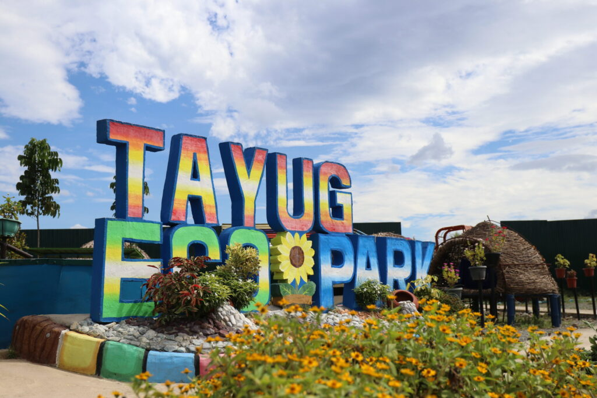
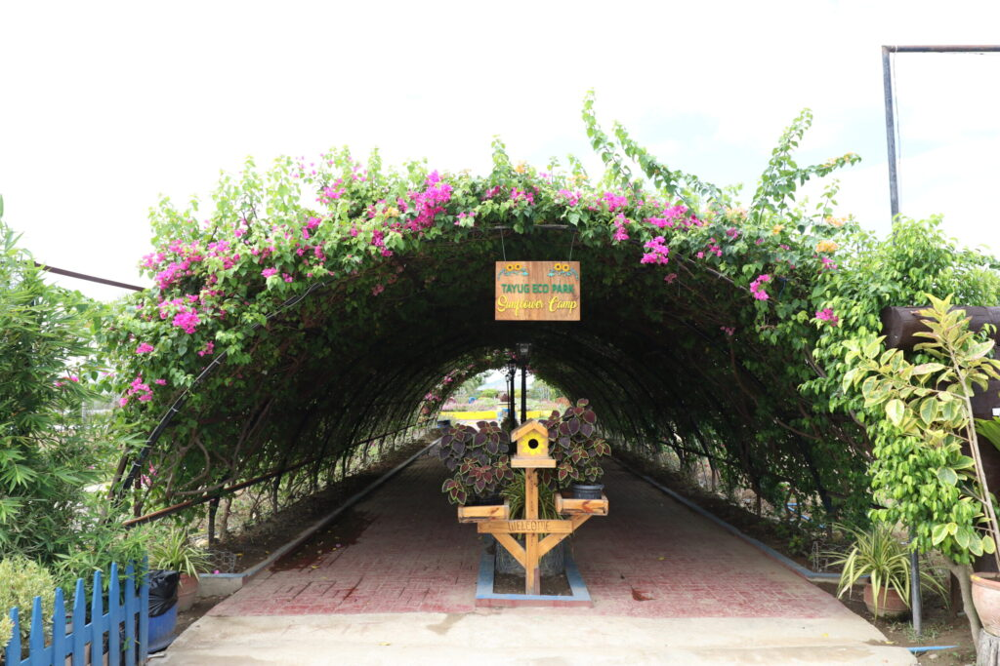
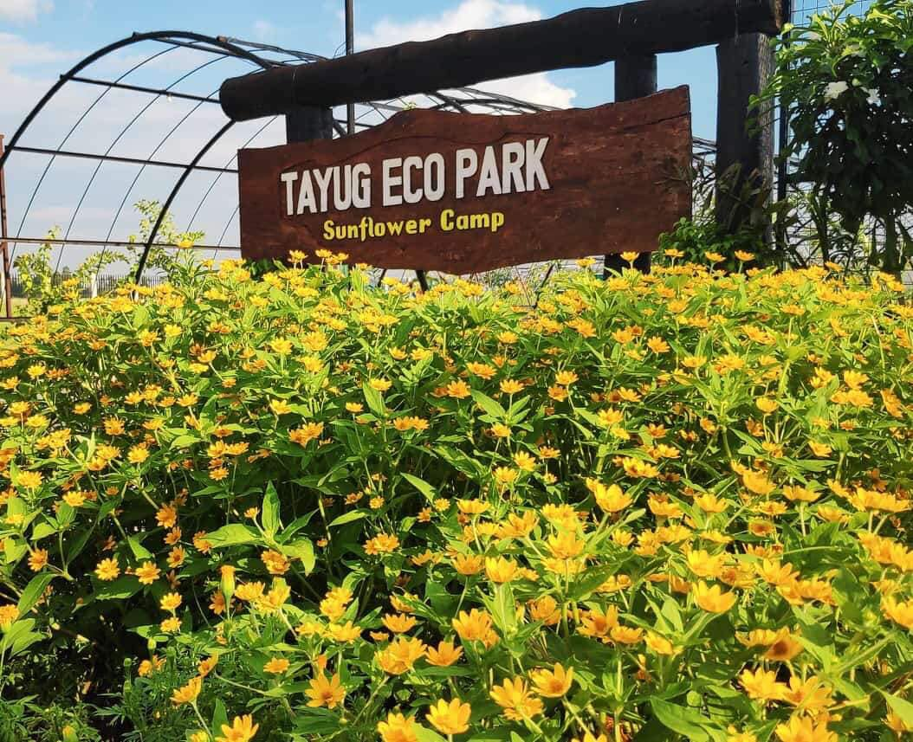
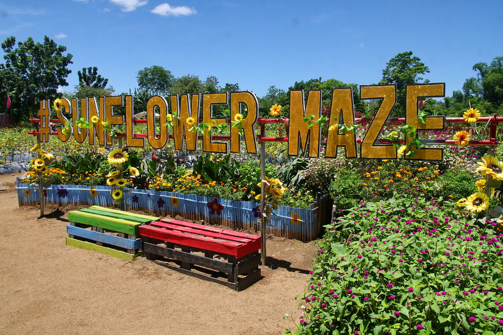

Tayug Sunflower Eco Park is a scenic attraction located in Tayug, Pangasinan, Philippines. It features a sunflower maze with various colors and shapes, offering visitors a delightful experience amidst the vibrant blooms.
The Tayug Sunflower Eco Park, located in Tayug, Pangasinan, is a relatively new attraction established in 2017. The park features a sunflower maze that spans a significant area within a demonstration farm. The maze was designed by landscape artist Toni Rivera and consists of thousands of sunflower plants.
The park quickly gained popularity due to its stunning sunflower maze, which offers visitors the opportunity to immerse themselves in a sea of vibrant sunflowers. The maze's design resembles a fully opened sunflower, providing a unique and picturesque experience for visitors.